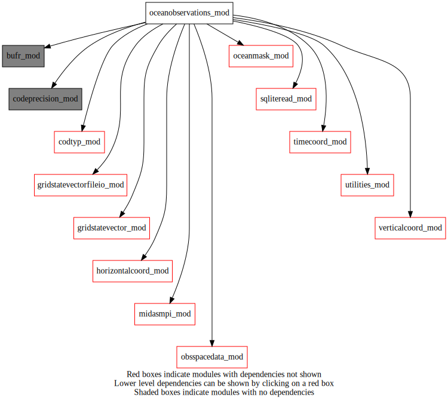
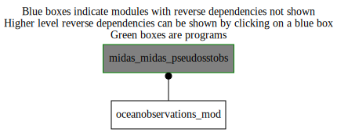

Dependency Diagrams:
 Direct Dependency Diagram¶
 Reverse Dependency Diagram¶
Description
MODULE oceanObservations_mod (prefix=’oobs’ category=’1. High-level functionality’)
- Purpose
storage for ocean observations related subroutines
Quick access
- Routines
Needed modules
midasmpi_mod: MODULE midasMpi_mod (prefix=’mmpi’ category=’8. Low-level utilities and constants’)
utilities_mod: MODULE utilities_mod (prefix=’utl’ category=’8. Low-level utilities and constants’)
obsspacedata_mod: MODULE obsSpaceData_mod (prefix=’obs’ category=’6. High-level data objects’)
codtyp_mod: MODULE codtyp_mod (prefix=’codtyp’ category=’8. Low-level utilities and constants’)
gridstatevector_mod: MODULE gridStateVector_mod (prefix=’gsv’ category=’6. High-level data objects’)
gridstatevectorfileio_mod: MODULE gridStateVectorFile_mod (prefix=’gio’ category=’4. Data Object transformations’)
horizontalcoord_mod: MODULE HorizontalCoord_mod (prefix=’hco’ category=’7. Low-level data objects’)
verticalcoord_mod: MODULE verticalcoord (prefix=’vco’ category=’7. Low-level data objects’)
oceanmask_mod: MODULE oceanMask_mod (prefix=’ocm’ category=’7. Low-level data objects’)
timecoord_mod: MODULE timeCoord (prefix=’tim’ category=’7. Low-level data objects’)
codeprecision_mod: MODULE codePrecision_mod (prefix=’pre’ category=’8. Low-level utilities and constants’)
sqliteread_mod: MODULE sqliteRead (prefix=’sqlr’ category=’3. Observation input/output’)
bufr_mod: MODULE bufr_mod (prefix=’bufr’ category=’8. Low-level utilities and constants’)Variables
Subroutines and functions
- subroutine oceanobservations_mod/oobs_pseudosst(hco, vco, icefractionthreshold, outputsst, outputfreshwaterst, icethinning, outputfilename, seawaterthreshold)¶
- Purpose
to generate pseudo SST data
- Arguments
hco [struct_hco ,inout,pointer] :: horizontal grid structure
vco [struct_vco ,in,pointer] :: vertical grid structure
icefractionthreshold [real ,in] :: consider no ice condition below this threshold
outputsst [real ,in] :: output SST value for pseudo observations
outputfreshwaterst [real ,in] :: output fresh water surface temperature for pseudo observations
icethinning [integer ,in] :: generate pseudo obs in every ‘iceThinning’ points
outputfilename [character ,in]
seawaterthreshold [real ,in] :: to distinguish inland water from sea water
- Called from
- Call to
mmpi_setup_lonbands(),mmpi_setup_latbands(),gsv_allocate(),gio_readfromfile(),ocm_readmaskfromfile(),ocm_deallocate(),gsv_deallocate(),tim_getdatestampfromfile(),utl_randomorderint(),oobs_computeobsdata(),obs_initialize(),sqlr_writeemptypseudosstobsfile()
- subroutine oceanobservations_mod/oobs_computeobsdata(obsdata, icedomainindexes, icelons, icelats, icethinning, outputsst, outputfreshwaterst, outputfilename, dateprint, timeprint, seawaterfraction, seawaterthreshold, inlandwaterpoints)¶
- Purpose
pseudo SST data are put into obsSpaceData and written into an SQLite file
- Arguments
obsdata [struct_obs ,inout] :: obsSpaceData
icedomainindexes (*) [integer ,in] :: array of the ice-covered point indexes
icelons (*) [real ,in] :: longitudes of sea ice
icelats (*) [real ,in] :: latitudes of sea ice
icethinning [integer ,in] :: generate pseudo obs in every ‘iceThinning’ points
outputsst [real ,in] :: output SST value for pseudo observations
outputfreshwaterst [real ,in] :: output fresh water surface temperature for pseudo obs
outputfilename [character ,in]
dateprint [integer ,in]
timeprint [integer ,in]
seawaterfraction (*) [real ,in] :: sea water fraction data: 0: fresh water; 1: sea water
seawaterthreshold [real ,in] :: to distinguish inland water from sea water
inlandwaterpoints [integer ,in] :: number of inland water points
- Called from
- Call to
obs_initialize(),codtyp_get_codtyp(),obs_setfamily(),obs_headset_i(),obs_bodyset_i(),obs_set_c(),sqlr_writepseudosstobs(),obs_finalize()
{kind=link}
{kind=link}